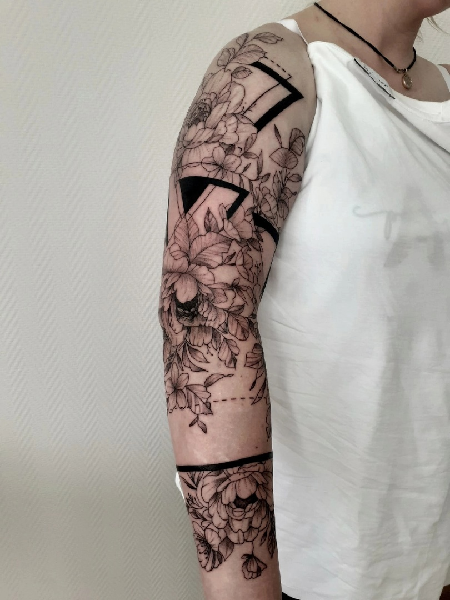
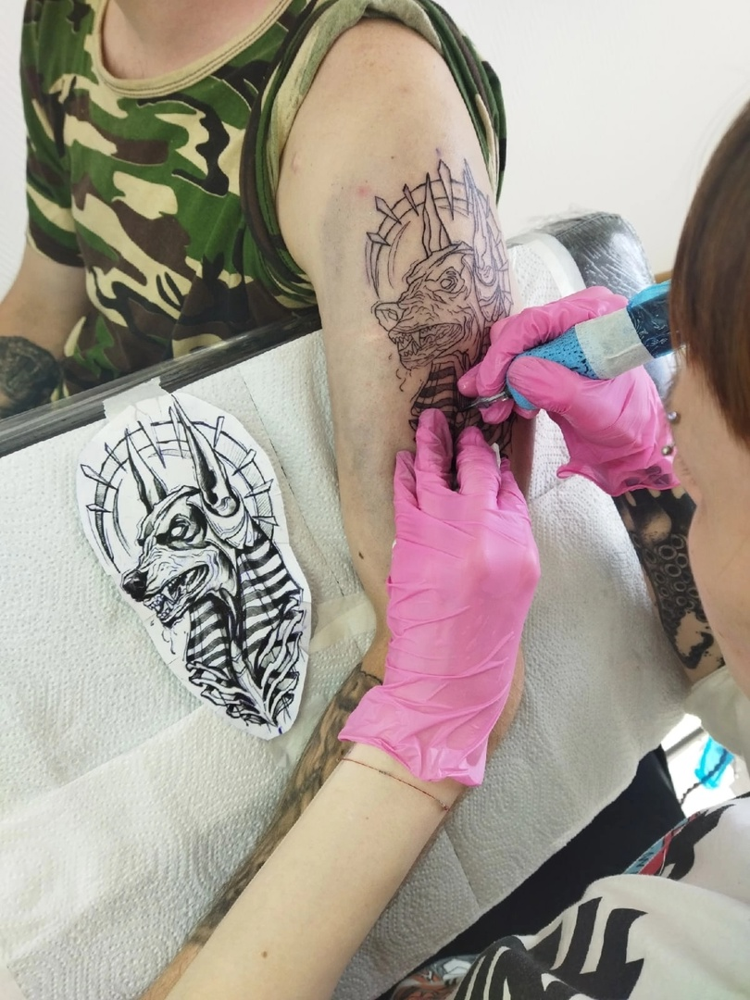
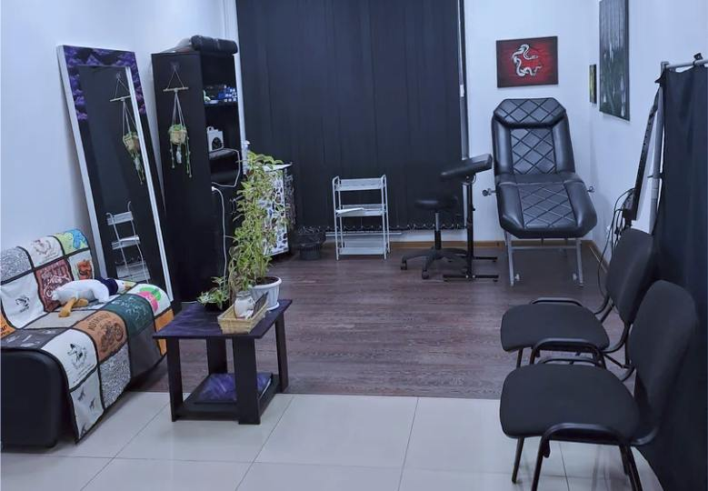

Из тату-мастера на дому вышла на свою тату-студию и увеличила доход в 5 раз наша прекрасная ученица Ирина Витюк из Екатеринбурга.
Мы взяли у нее короткое интервью:
— Расскажи, что было до курса, какой средний доход был в месяц? Сколько клиентов?
— До курса доход в среднем был ну 30-40 к. И я тогда ещё на дому работала, брала мало за работу. Когда зашла на курс ВК бабло, решилась и открыла небольшую студию. По мере обучения, в первые месяцы вышла в среднем на 15-20 клиентов и доход стал 50-70 к. Много работала, брала по 2 человека в день, чтобы заработать побольше.
— Ты крутышка) Расскажи, трудно было учиться? Уроки были понятные? Или что-то вызывало сложности?
— Уроки были очень понятные, супер информативные и интересные. Но мне было немного трудновато на технической части. Настройка группы и таргета. Трудно было, потому что я раньше ничего подобного никогда не делала и мозг сопротивлялся и кипел))

Но это моя личная сложность, а сама схема как настраивать расписана до подробностей. Именно поэтому даже я смогла повторить и сделать также!
— Скажи, а на твой взгляд, с куратором было бы проще?
— Может быть и да, но думаю, что всё же нет. Наверное, куратор тут бы не помог, потому что сложность была в том, что я просто очень долго копалась в настройках и тратила на это целые дни. Ооочень медленно всё делала)) Наверное, куратор не смог бы в этом помочь. Не знаю.
— Какие сейчас действия делаешь для привлечения клиентов? Как часто пишешь посты? Запускаешь ли рекламу?
— Активничаю в соц сетях, пишу комменты, ставлю лайки, пишу своим старым клиентам, чтобы напомнить о себе и спросить как зажила тату и какие ощущения от неё сейчас, спустя время. Это правда помогает. Может не сразу же, но, как я заметила, эти люди, спустя время, сами пишут и записываются.

Посты пишу раза 3-4 в неделю, но бывает и меньше. Когда много работы, писать просто некогда))
Стараюсь писать разные и интересные посты, чтобы люди видели, что я живой человек. В общем, как вы учили))
Рекламу запускала 2 раза, но она плохо пошла и тогда я перестала запускать. И без неё клиенты шли, но в данный момент думаю её снова попробовать запустить, потому что, как-будто дошла до своего предела и хочется расширения аудитории.
— А можешь поделиться, как изменилась жизнь, когда увеличился доход? Может что-то купила себе? Съездила в путешествие? Что-то смогла сделать, чего раньше не могла позволить себе)
— Наконец-то смогла себе позволить осуществлять маленькие мечты и цели) Я пошла сдавать на права на машину и на мотоцикл. Купила себе новый айпад для рисования эскизов. Переехала в другую квартиру, пока снимаю, но всё впереди.
Много чего купила для своей тату студии. Честно сказать, после вашего курса я обставила её так, как захотела. А до этого там было пусто и плачевно. Теперь там хорошая новая мебель для уюта и для работы.
Так выглядит студия сейчас

Теперь могу покупать своим родным хорошие, дорогие подарки. Те, которые они заслужили, а не те, на которые хватает денег.
И, самое главное, я могу откладывать и копить.
Ещё открыла для себя недешёвое хобби - эпоксидную смолу. Но купила всё, что нужно и кайфую!
Конечно, можно и нужно ещё лучше. Но моя жизнь правда стала в разы приятнее. Очень круто, когда можешь себе позволить то, что хочешь!
И последнее. Я же тоже себе делаю татухи и не дешёвые, потому что мне важно качество, я ценю это. И, конечно же, теперь мне не жалко, а наоборот приятно платить за свою тату.
— Все, остался только вопрос, сколько сейчас зарабатываешь? Сколько в среднем в месяц? Сколько клиентов? А вот примерно сколько за год было прошедший заработано?
— Сейчас зарабатываю минимум 100, ниже больше не спускаюсь. В среднем 100-160. Пока ещё плавает доход, в зависимости от времени года, но зато есть куда расти. С вашим курсом дальше - больше. Без всяких сомнений.
Клиентов теперь в среднем 10-15, но я подняла цены. Появилось больше свободного времени. Меньше устаю, меньше болит спина))
За год сложно сказать, раньше вела записи доходов в тетради, там было 50-90 максимум в месяц. А с июня начала вести записи в приложении на телефоне.
И вот с июня по ноябрь, то бишь за пол года, 678 000. Если сравнивать с моим доходом раньше, то это много!
— То есть, если сравнивать с тем, что было до курса, то ты выросла в доходе в 5 раз?
— Да! Ещё хочу добавить, что изменился не только доход, но и моё отношение к себе! Я стала намного увереннее. Сейчас я не чувствую себя недо-мастером. Сейчас я тату мастер, который разбирается в своём деле и не боится сказать об этом всем.
Я стала намного смелее, реально поверила в себя! Я знаю что могу всё, я знаю чего хочу и куда иду. Я полюбила себя. Блин, это чертовски круто! Для меня это намного важнее денег.
Мои соц сети процветают. Под каждым постом мои клиенты и те, кто просто следит за мной, пишут комменты и слова поддержки. Я понимаю, что не одна, у меня есть своя аудитория. Это не купишь за бабки, это бесценно!! За что не устаю благодарить тебя, Евгения, мою наставницу!